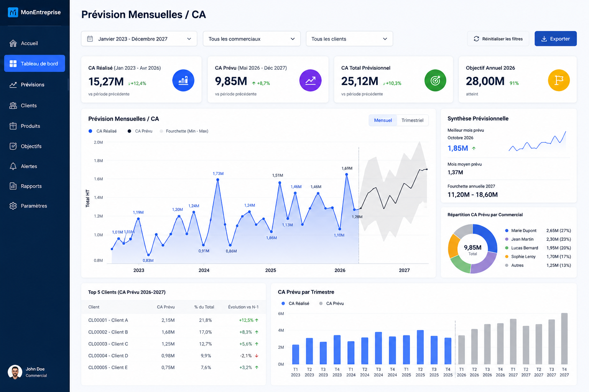
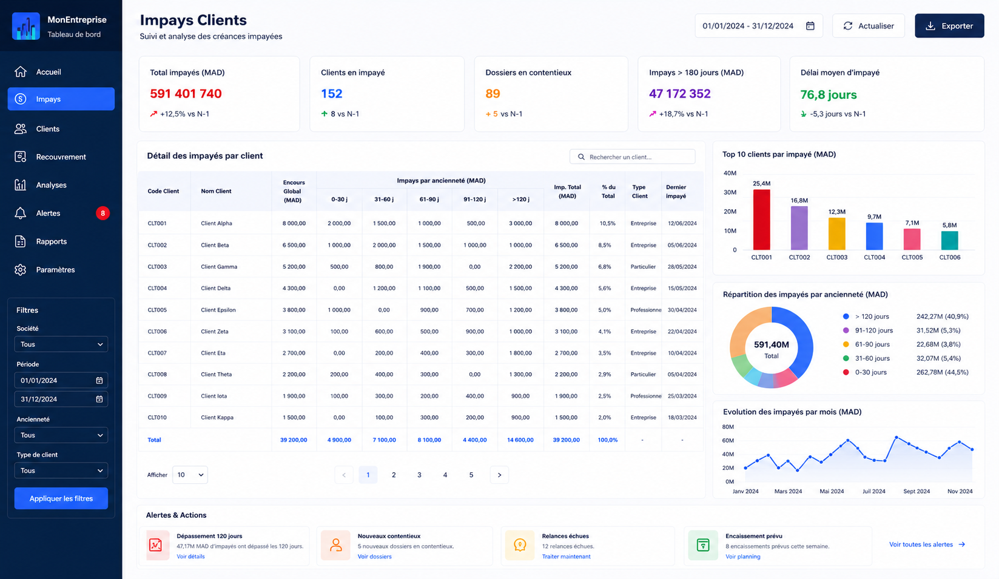
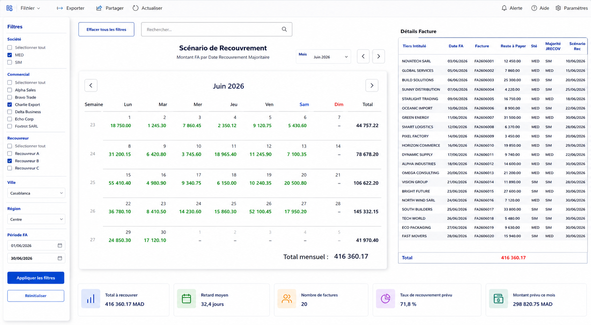
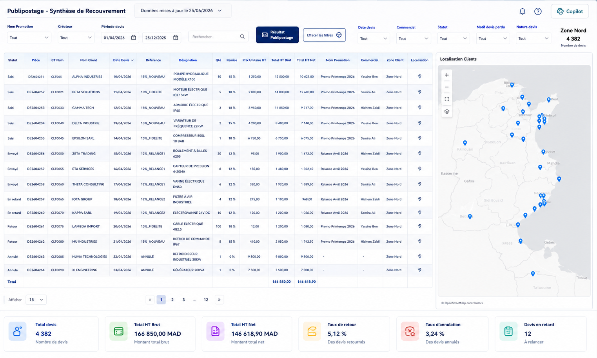
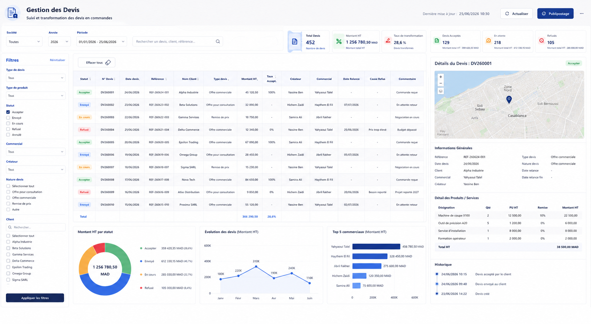
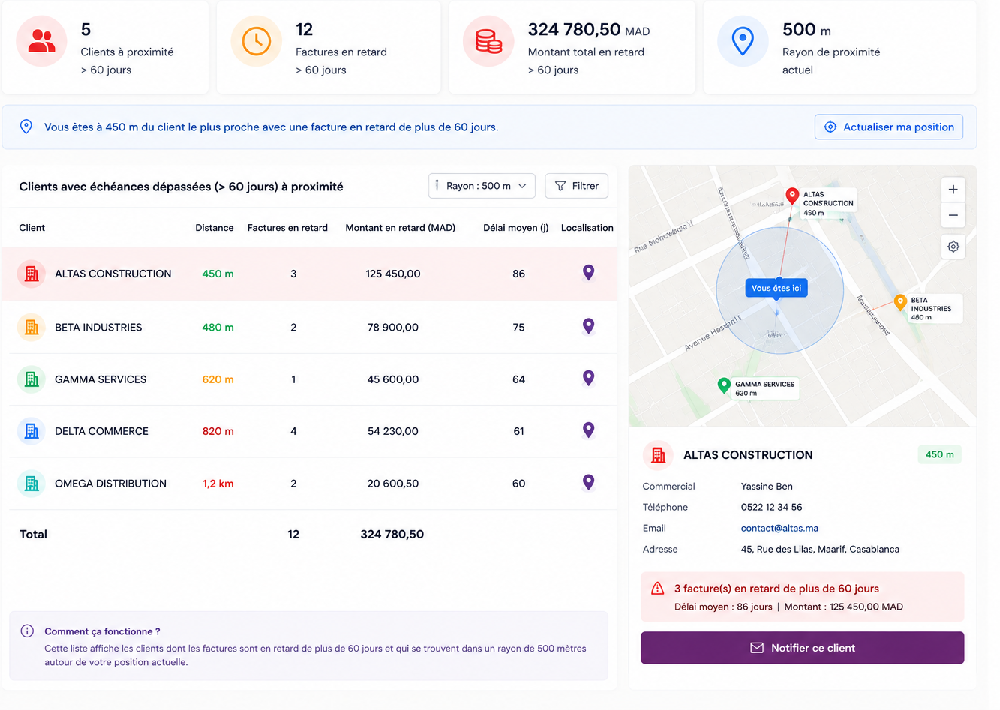
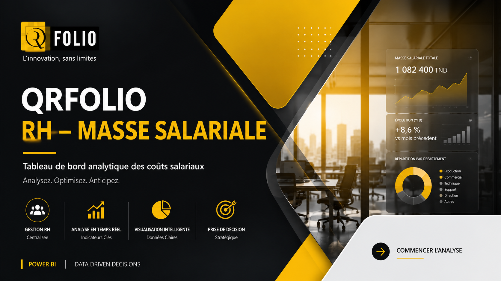
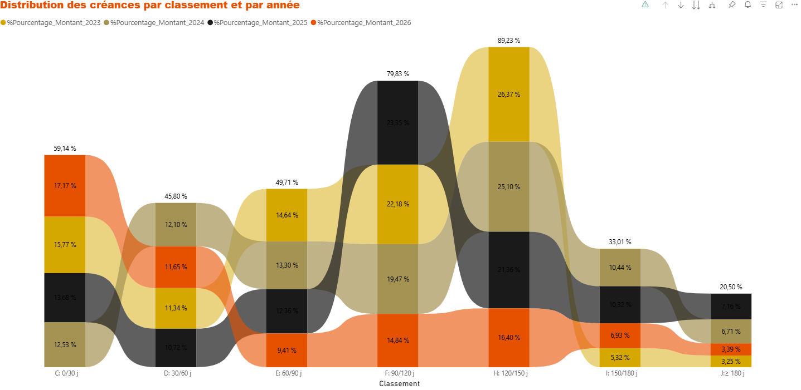
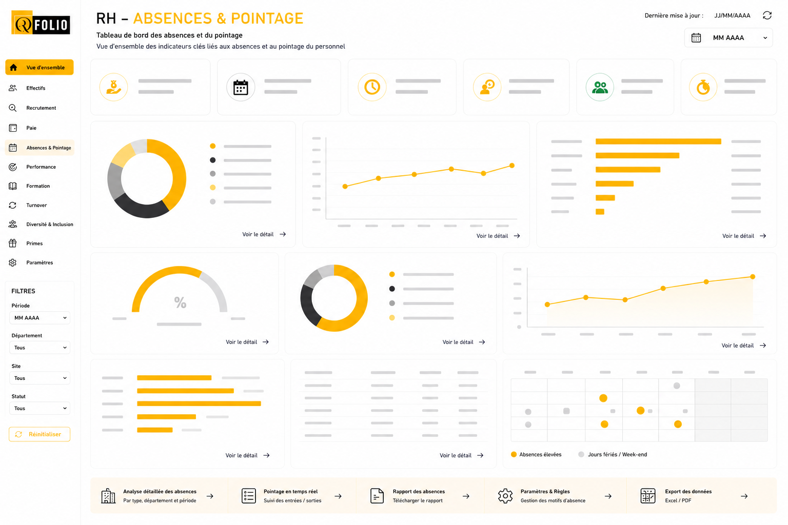

Je transforme les données brutes en écosystèmes décisionnels complets. De la Vue Client 360° au SIRH intégré, workflows IA et géolocalisation commerciale — des solutions que les équipes utilisent vraiment.
Je suis Responsable Systèmes d'Information chez Group Driss et Fondatrice de QR Folio, où j'ai conçu de zéro un écosystème décisionnel couvrant Finance, Commercial, RH, Production et Maintenance.
Mon approche : partir du besoin terrain, concevoir la solution la plus simple et la plus puissante. J'intègre l'intelligence artificielle dans les workflows : génération de devis, scoring, géolocalisation commerciale.
Cliquez sur un projet pour voir les détails et captures d'écran. 👆

Prévision mensuelle et trimestrielle du chiffre d'affaires avec fourchette min/max, objectifs annuels et répartition par commercial.

Suivi complet des créances impayées par ancienneté, alertes automatiques, Top 10 clients et évolution mensuelle.

Calendrier intelligent suggérant le meilleur jour de recouvrement par client selon son comportement de paiement historique.

Synthèse complète des devis avec localisation clients sur carte, statuts, taux de retour/annulation et suivi par commercial.

Suivi complet du cycle devis : de la saisie jusqu'à la commande confirmée. Taux de transformation 28,6%, pipeline par statut et Top commerciaux.

Alerte en temps réel : si le commercial est à moins de 500m d'un client avec facture échue → notification immédiate avec détails client.

Tableau de bord analytique des coûts salariaux : évolution YTD, répartition par département, analyse en temps réel et prise de décision stratégique.

Distribution des créances par classement d'ancienneté (0-180j+) et par année. Visualisation avancée de l'évolution du portefeuille créances.

Effectifs, Absences & Pointage, Primes, Recrutement, Formation, Turnover, Performance, Diversité & Inclusion — tout connecté à Sage Paie avec RLS.
Recherche instantanée par client : historique, recouvrement, impayés, objectifs, produits et prévisions de vente. RLS multi-niveaux.
IA analyse les besoins clients → génère devis dans Sage avec scoring (~70-90%) → validation back-office → envoi automatique → suivi temps réel.
Rapprochement entre données Tej (CNSS) et Sage Paie : détection des écarts, contrôle des cotisations sociales et validation des effectifs déclarés.
Ouverte aux opportunités en France 🇫🇷 · UAE 🇦🇪 · Qatar 🇶🇦 · KSA 🇸🇦